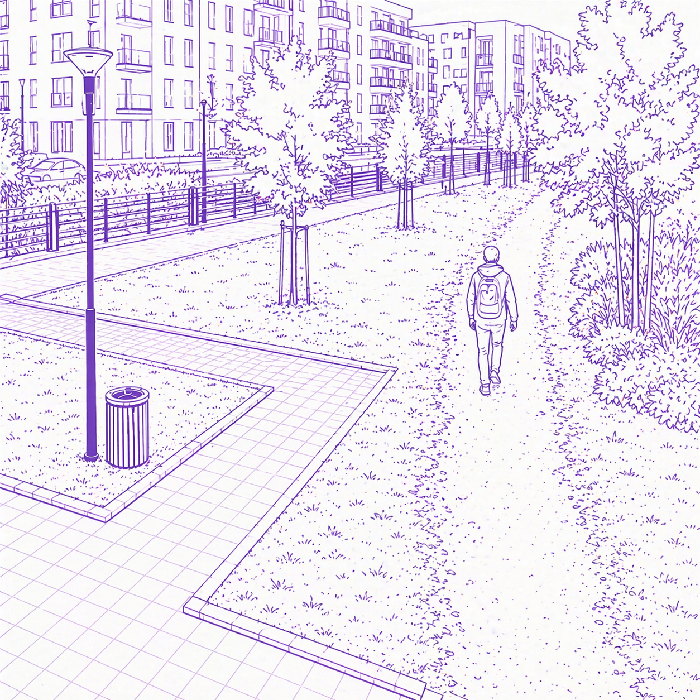
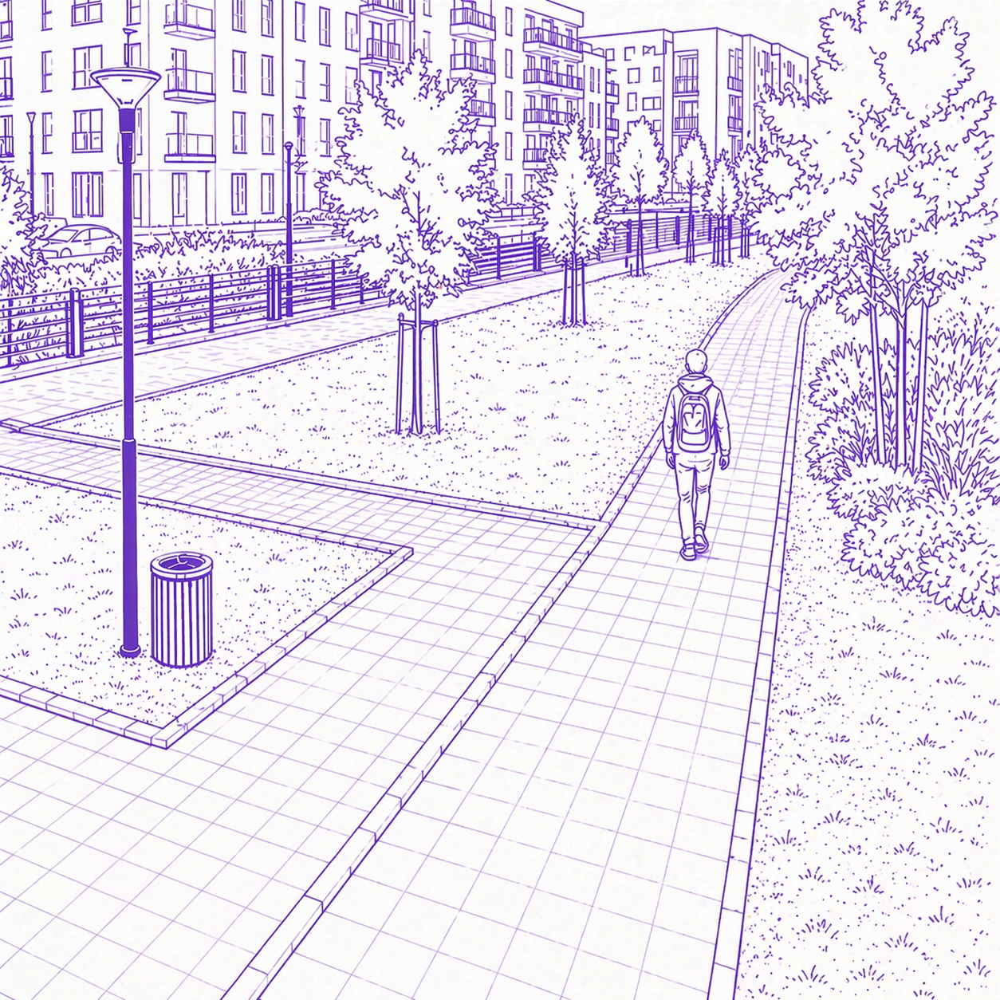

Про нейминг
Нейминг перестал быть упражнением в креативности ради креативности (в творческом смысле). Он стал инструментом снижения трения между клиентами, партнёрами и участниками команды.
Если раньше название должно было “впечатлить”, поразить, уничтожить восприятие “до” восприятием “после”, то сейчас его задача — не мешать.
Это сдвиг, который виден почти во всех категориях: от стартапов до банков и медиа.
Казалось бы, простые слова наверняка упрощают задачу, но нет. Задача на самом деле весьма нетривиальная, даже больше — она стала архисложной.
Краткость как базовое требование
Современные названия сокращаются до предела. Одно слово, часто 1–2 слога.
Причина не в моде, а в среде:
В этих условиях выигрывают не “оригинальные”, а мгновенно читаемые.
Хорошее название сегодня — это не то, которое объясняет, а то, которое не требует объяснений.
Когда дорожку протаптывают люди
Один из самых очевидных приёмов мы называем “протоптать дорожку жителями района”. Как это работает: многие из вас видели, что изначально в ЖК дорожки прямые — застройщик делает базовый контур. Потом он ставит табличку “по газонам не ходить”. Но люди всё равно ходят там, где им удобно. Это и есть оптимальные пути.
Если повезёт с управляющей компанией, эти дорожки закрепляют: заасфальтируют, кладут брусчатку или оформляют иначе.

До

После
Так же и в нейминге: пользователи со временем сами сокращают неоптимальные названия.
Например, длинные или сложные бренды в разговоре почти всегда упрощаются — остаётся короткая, удобная форма, которой реально пользуются.
Приятный бонус в том, что это можно обернуть в коммуникацию: зафиксировать это сокращение как официальное и сказать “мы вас услышали”. Во многих случаях это работает как усиление бренда.
Но не всегда. Иногда это сигнал, что исходное название было выбрано неудачно и пользователи просто “исправили” его за вас. А ещё бывает, что некоторые клиенты не узнают вовремя о смене названия.
Локальность и язык
Есть достаточно исследований, показывающих, что язык и алфавит напрямую влияют на восприятие. Даже визуальные элементы работают на уровне ассоциаций: например, иероглифы или стилизация под них рядом с лапшичной могут усиливать ощущение аутентичности.
В России кириллица перестала быть компромиссом и всё чаще становится осознанным выбором. Локальный язык проще, быстрее и надёжнее в повседневном использовании.
Это особенно важно в продуктах с регулярной точкой контакта: медиа, сервисы, приложения.
Хороший пример — наш опыт с названием “CyberKids”. В некоторых случаях мы даже добавляли вариант прочтения на русском — “СайберКидз”, чтобы снизить трение. Несмотря на это, по телефону мы слышали десятки интерпретаций: “КуберКидс”, “КиберКидс”, “СиберКидс” и даже “Сувениры”.
Это наглядно показывает, насколько сильно язык влияет на восприятие и насколько непредсказуемо ведёт себя пользователь, когда сталкивается с непривычной формой.
Смысловая честность
Рынок устал от “красивых, но пустых” слов. По крайней мере, его значительная часть.
Название не должно вызывать внутреннего сопротивления.
Хорошее название сегодня — это не то, которое “объясняет”, а то, которое не требует объяснений.
Например, наш предыдущий вариант “Студио” не до конца отражал, чем именно мы занимаемся. В широком смысле студия — это небольшая команда (иногда даже 1–2 человека), которая создаёт что-то авторское.
Но в реальности это слово используется слишком широко. Его берут и парикмахерские, и ногтевые салоны, и детейлинг-центры, и многие другие. Мы ничего не имеем против, но из-за этого оно теряет конкретность.
Для пользователя это превращается в размытое обозначение без чёткого смысла. Нам хотелось этого избежать.
Характер вместо описания
Названия всё чаще уходят от описательной логики (“что мы делаем”) к ощущенческой (“как это чувствуется”). Происходит сдвиг от функции к тону, от объяснения к образу. Это даёт бренду гибкость: он перестаёт быть жёстко привязан к текущему продукту и может расширяться без смены имени.
Простота как стратегия, а не упрощение
На первый взгляд может показаться, что нейминг упростился. На практике всё наоборот — задача стала сложнее.
Простое название сложнее придумать, сложнее принять и сложнее защитить внутри команды. Оно не прячет за собой смыслы и не создаёт иллюзию “глубины за счёт сложности”. Такое название остаётся открытым и требует уверенности в продукте и действиях.
Есть и практический фактор: короткие слова чаще всего уже заняты. Это дополнительно усложняет задачу и требует либо точного попадания, либо готовности работать с ограничениями.
К чему мы в итоге пришли
С сегодняшнего дня мы — Арфа.
Это короткое слово, которое читается сразу. Для нас это был главный критерий.
Мы не искали идеальное слово. Мы искали то, с которым не возникает внутреннего сопротивления — ни у нас, ни у людей, которые с нами работают.
В какой-то момент стало понятно, что дальше усложнять не нужно.
Под этим названием мы продолжаем делать наши продукты, проводить маркетинговые исследования и развивать всё остальное.
Наш сайт: arfa.pro
Заходите к нам в гости, всегда рады!